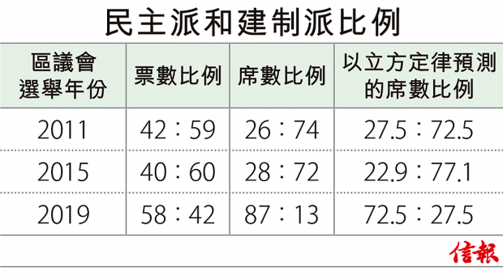

今年的區議會選舉已經結束，選民的投票率大幅提升至71%，本屆選票總和約294萬票，民主派所得的選票約167萬票，建制派則有120萬票，比例約58︰42（附註1）。在所得議席方面，民主派取得385席，建制派取得59席，所以議席的比例約為85︰15。
很多人會覺得很奇怪︰為什麼以58比42的人數比例，竟然可以取得如此一面倒的議席比例呢？其實議席比例大大高於人數比例的現象，早於1909年英國的一個選舉後已被廣泛研究（附註2）。在英國皇家選舉委員會的聽證中，英國政治人物詹姆士．帕克爾．史密斯（Rt. Hon. James Parker Smith）作了一個報告，報告中引述一位數學家Major MacMahon的計算，指出票數比例和議席比例應遵守一個「立方定律」（Cubic Law）。
準確預測兩派所得席數
在一個只有兩個政黨的分區選舉中，V為政黨A所得票數的百分比，S為政黨A所得席數的百分比，所謂立方定律指的是票數比例﹝V/（1-V）﹞與席數比例﹝S/（1-S）﹞有以下的立方關係S/（1-S）=﹝V/（1-V）﹞^3（附註3）。
在本屆選舉中，由於V/（1-V）=58/42，所以S/（1-S）=2.634，由此算出S=0.725。所以根據立方定律民主派應得到72.5%的議席，事實上他們於本屆所得議席為85%，比立方定律所估計的還要高。為什麼會出現比立方定律還要極端的情況，我們有機會再為文論述。
其實我們亦可用前兩屆的區議會選舉數字來驗證一下立方定律的準確性。【附表】列出最近3屆區議會選舉的有關統計數字。第一列是年份，第二列是該年的票數比例，第三列是該年的席數比例，第四列是根據立方定律所預測的席數比例，數字可以看出立方定律於2011年和2015年能夠相當準確地預測兩派所得的席數。
同時也可以用【附圖】來說明以上的現象，圖內的橫軸是V（票數百分比），縱軸是S（席數百分比），藍線代表V跟S有線性的關係，而紅線代表V跟S服從立方定律，圖中的3個綠點代表三個年份的真實數據。由該圖可以看出︰實際數字遠遠偏離於線性關係（亦即六成選票得六成議席一點都不切合實際），但立方定律就比較貼合實際。此外，於2011年及2015年，立方定律有相當大程度的準確性，而於2019年，席數比例遠高於線性的預測，甚至比立方定律所預測的為更高。
有關立方定律在維基網站亦有所介紹，該網站指出︰立方定律自100年前在英國面世後，在很多其他國家的選舉中，該定律都能夠派上用場。例如在2002年美國的眾議院選舉中，該定律能夠準確地用得票率估計席數的百分比。此外，立方定律在紐西蘭的選舉之中亦非常適用。
不代表完美準確關係
在選舉制度改革之前，由1940年直到1993年，立方定律所預測的席數與真實的席數誤差少於1。但當選舉年份出現一個力量比較強大的第三個大黨派，立方定律的準確度會打一個比較大的折扣。英國由1950年至1970年的選舉中，立方定律都有不錯的準確性，但在1974年後立方定律就比較失效，席數比例對工黨有傾斜的傾向。
「立方定律」幫助探索在既定政黨格局下，所產生的議席分配和選區劃分以及選票數目與席位數目是如何產生。
自史密斯於1909年提出立方定律之後，很多學者對這一法則進行了闡述和論證，立方定律的文獻已經成為民主理論中選舉和代議制度中的一個重要理論焦點。值得注意的是，立方定律只是一個投票數與席位數間的實證聯繫，並不能代表一種完美而準確的關係。
附註1︰452個選區中有5個選區由不明確派系的候選人當選。以上的比例是去除該五個選區後的比例，如把該五個選區都計算在內，得票比例接近接60︰40。由於立方定律只適合應用於兩黨制和單議席單票制的選舉，所以我們把該五區去除。
附註2︰Minutes of Evidence before the Royal Commission 19 May 1909
附註3︰用以上的立方定律可以算出S=V^3/（1-3V+3V^2）
參考資料︰
Kendall, M. G., & Stuart, A.(1950). The Law of the Cubic Proportion in Election Results. The British Journal of Sociology, 1(3), 183. doi : 10.2307/588113
Tufte, E. R. (1973).The Relationship between Seats and Votes in Two-Party Systems. American Political Science Review, 67 (2), 540–554. doi : 10.2307/1958782
陸俊杰為金融交易員
鄒小敏為理工大學專業進修學院客席講師
林建教授為香港浸會大學榮休教授兼香港大學統計精算學系榮譽教授
Article from HKEJ Source